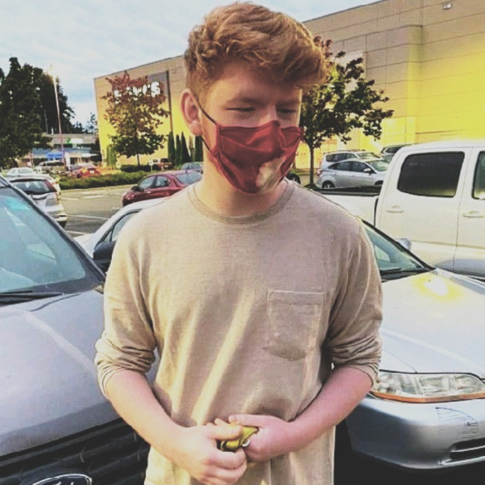

This is my more organic portfolio, built manually to be responsive, with grid! I've strewn a few content
cards throughout
this page and added some flavor, relative to my last portfolio example.
I have helped release a
couple of gamesin my time, and love designing game systems, from
tabletop-style rpgs to 2D survival sandboxes.
I also have written a few discord bots, with my latest being
giflias on github. I love
bridging the gap
between messaging platforms and game systems, and always aim to write software that facilitates natural
interaction.
I've been studying computer science and its adjacent fields since 2017, but have had a genreal
compassion for working on computers since I was very little!
Using the computer as a creative medium has given me a nearly endless hobby, and I am excited more
every day to learn new interface or systems design concepts and experiment with them.
little bit on the right side
the bootstrap version of this portfolio is
here.
Bootstrap made the construction of this page nearly seamless, and was
incredibly easy. I've used 2 blank columns to add a gap in this row with ease!
This is my linkedin profile picture! I made the border on this box look like plaid on accident, but I
kinda dig it!

I should probably fill this bottom section out
with footer info or some sort of copyright notice. oh well.
Imitation is flattery, to whoever
wonders if
they should steal this look and feel.